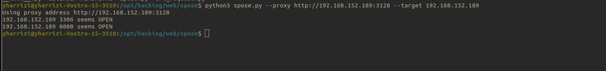

SQUID PROXY
SQUID PROXY
- caching proxy
- curl -x <squid_ip:port> 127.0.0.1:80
- port 3128
- restrictions for servics
- ip blacklist example only localhost
- User-Agent:Firefox // to restrict curl or command line tools
- note : we can use proxychains
- http 192.144.146.3 3128 // generally
- Bruteforce attack
- nmap --script http-proxy-brute -p3128 $target
- curl -x user:password@<ip_squid:port> 127.0..1
- Not web : example ssh
- .ssh/config
- ProxyCommand corkscrew 192.169.10.3 3128 %h %p /root/auth
- /root/auth is the file that contains creds
RECON
The content of Web Proxy Autodiscovery Protocol files ( wpad. dat ) is identical to that of proxy. pac files as they both contain the same few JavaScript lines that are used to configure your users' browsers to use the Sophos Web Appliance as their web prox
Nmap
git clone https://github.com/aancw/spose
cd spose
python3 spose.py --proxy http://192.168.152.189:3128 --target 192.168.152.189
# on foxyproxy set proxy f
